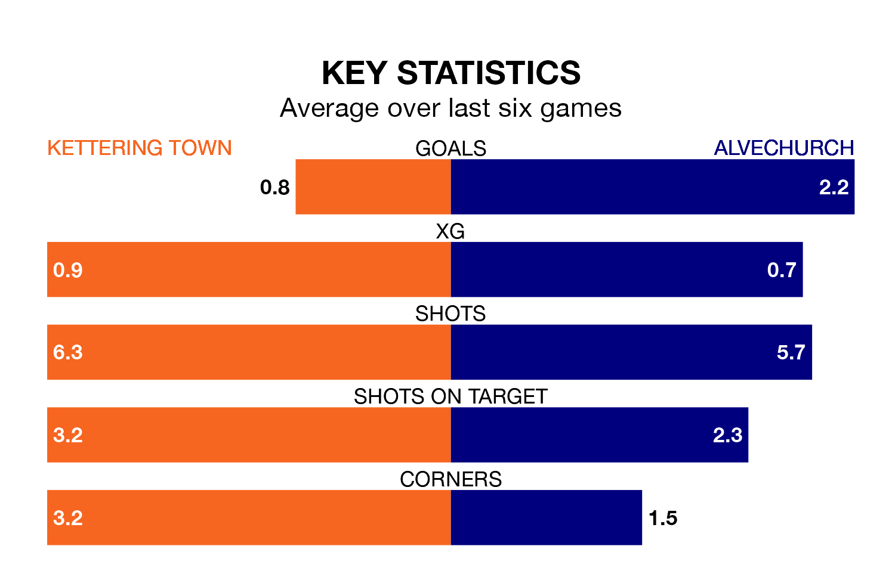

Kettering Town host Alvechurch at Latimer Park on Saturday on the back of three consecutive wins in the Southern League Premier Central.
Kettering have picked up 10 points from their last six games, and they face an Alvechurch side who also won their last match, and have collected 11 points from the last possible 18.
Kettering are 18th in the table after 33 games, of which they have won 10 and drawn seven, earning 37 points.
Alvechurch are four places ahead of Town in 14th, with 11 wins and nine draws putting them on 42 points.
With 40 goals in 33 games so far this season, the Poppies are scoring at below the league average rate with 1.2 goals per game. And they are conceding more than average, letting in 64 goals at a rate of 1.9 per game.
The away team are also below average scorers, with 1.4 goals per game, compared to a league average of 1.5. They have conceded 1.8 goals per game.
Kettering's last match was on March 16, a 1-0 win against AFC Sudbury.
Alvechurch beat Stourbridge 1-0 last time out, also on March 16.
Updated: 10:19 (UTC), 22/03/24